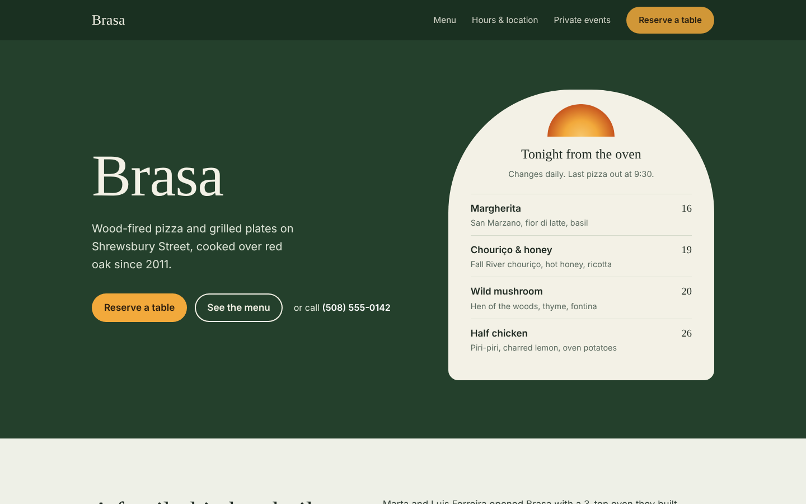

Restaurant
Brasa
A wood-fired kitchen on Shrewsbury Street. The homepage leads with tonight's oven menu, because that's what diners actually come to check.
- Style: warm and local
- Menu, hours, map and reservations in the first scroll
- Private events inquiry
Behind it: Brand book, Design system, WordPress theme, Privacy, Accessibility, Repo
View the site